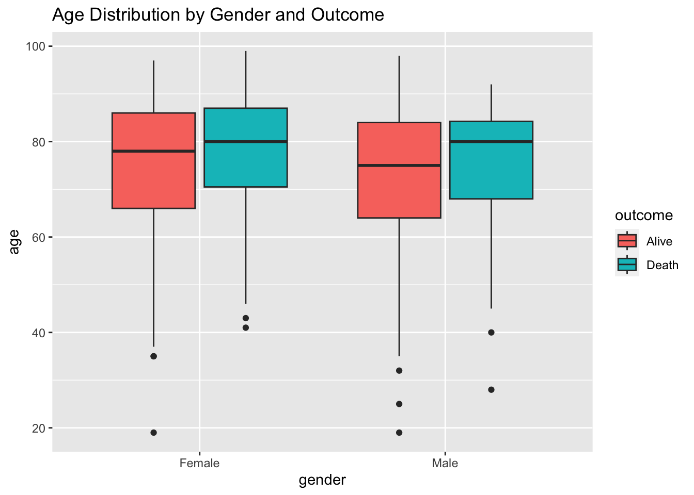

Exploratory Data Analysis
Demographic Characteristics
The exploration of demographic factors such as gender and age provides critical insights into their potential impact on the outcomes of heart failure patients admitted to the Intensive Care Unit (ICU). This report section presents an analysis of in-hospital mortality rates categorized by gender and age groups.
Gender-Based Mortality Analysis
mortality_data_EDA %>%
group_by(gender) %>%
summarise(
Count = n(), # total number of entries for each gender
Alive = sum(outcome == "Alive"), # number of outcomes with value 0
Death = sum(outcome == "Death"), # number of outcomes with value 1
Percentage = Death/Count
) %>%
knitr::kable(digits = 3) | gender | Count | Alive | Death | Percentage |
|---|---|---|---|---|
| Female | 618 | 539 | 79 | 0.128 |
| Male | 558 | 478 | 80 | 0.143 |
The dataset comprised 618 females and 558 males. The mortality rate among female patients was 12.8%, while the mortality rate for male patients was slightly higher at 14.3%.
Age-Based Mortality Analysis
# Define age intervals
age_breaks <- c(-Inf, 20, 40, 60, 80, Inf)
age_labels <- c('Under 20', '20-40', '40-60', '60-80', 'Over 80')
# Create age groups and summarize outcomes
mortality_data_EDA %>%
mutate(Age_group = cut(age, breaks = age_breaks, labels = age_labels, right = FALSE)) %>%
group_by(Age_group) %>%
summarise(Count = n(),
Alive = sum(outcome == "Alive", na.rm = TRUE),
Death = sum(outcome == "Death", na.rm = TRUE),
Percentage = Death/(Alive + Death)) %>%
knitr::kable(digits = 3) | Age_group | Count | Alive | Death | Percentage |
|---|---|---|---|---|
| Under 20 | 2 | 2 | 0 | 0.000 |
| 20-40 | 16 | 15 | 1 | 0.062 |
| 40-60 | 158 | 138 | 20 | 0.127 |
| 60-80 | 492 | 435 | 57 | 0.116 |
| Over 80 | 508 | 427 | 81 | 0.159 |
It was observed that patients under 20 years had a 0% mortality rate. Patients aged 20-40 years had a mortality rate of 6.2%, which increased with age. The 40-60 and 60-80 age groups had mortality rates of 12.7% and 11.6%, respectively. Notably, the group over 80 years had the highest mortality rate at 15.9%, underscoring the increased vulnerability among the elderly population.
# Distribution of Age
ggplot(mortality_data_EDA, aes(x = age)) +
geom_histogram(binwidth = 3, fill = "steelblue", color = "black") +
ggtitle("Age Distribution")
The histogram shows the age distribution of patients with heart failure admitted to the ICU, and it is highly left-skewed. It shows that the bulk of patients falls within the middle-aged to elderly category, with a significant concentration between ages 70 and 90. This suggests that heart failure is more prevalent or more severe, warranting ICU admission, in this age demographic.
Gender & Age Bivariate Analysis
# Bivariate Analysis
ggplot(mortality_data_EDA, aes(x = gender, y = age, fill = outcome)) +
geom_boxplot() +
ggtitle("Age Distribution by Gender and Outcome")
The boxplots show the age distribution for different genders and outcomes. We see that for both genders, the age distribution for patients who did not survive (outcome 1) is slightly higher. This could indicate that older age is a risk factor for mortality in this patient group.
BMI by Gender and Outcome
The histogram below illustrates the distribution of Body Mass Index (BMI) across patients with heart failure, categorized by gender and outcome (Alive vs. Death).
# BMI by Gender and Outcome
ggplot(mortality_data_EDA %>% drop_na(bmi), aes(x = bmi, fill = as.factor(outcome))) +
geom_histogram(binwidth = 4, position = "dodge") +
facet_wrap(~gender) +
ggtitle("BMI by Gender and Outcome")
It shows a wide range of BMI values for both genders, with no clear pattern indicating that BMI is distinctly associated with the outcome. However, there are more data points for BMI for outcome “Alive”, which may suggest a higher survival rate for patients with a lower BMI, but further statistical analysis is needed.
Comorbidities Analysis
Analyzing the distribution of comorbidities by outcome can identify factors that influence mortality in patients with heart failure. It helps to understand the impact of comorbid conditions on patient survival and could inform targeted interventions. The stacked bar chart below presents the distribution of various comorbidities among heart failure patients in the ICU, differentiated by patient outcomes of survival and death.
# Analyzing the presence of comorbidities by outcome
comorbidities <- c("hypertensive", "diabetes", "deficiencyanemias", "depression", "renal_failure", "copd", "hyperlipemia")
# Melt the data for easier plotting
mortality_long <- melt(mortality_data_EDA, id.vars = "outcome", measure.vars = comorbidities)
# Plotting comorbidities by outcome
comorbidity_plot <- ggplot(mortality_long, aes(x = variable, fill = as.factor(value))) +
geom_bar(position = "fill") +
facet_wrap(~outcome) +
labs(x = " ", y = "Count", fill = "Presence") +
ggtitle("Distribution of Comorbidities by Outcome") +
scale_y_continuous(labels = scales::percent) +
theme(axis.text.x = element_text(angle = 50, hjust = 1))
interactive_plot <- ggplotly(comorbidity_plot)
interactive_plotObservations based on the chart include:
Prevalence of Comorbidities: The chart shows that certain comorbidities such as hypertension, diabetes, and hyperlipemia are common among heart failure patients. This indicates that these conditions frequently co-occur with heart failure, which could compound the complexity of patient management.
Impact on Mortality: The chart indicates a higher ‘Yes’ proportion in the ‘Alive’ outcome, which suggests that having the comorbidity did not necessarily correlate with a higher mortality risk for that specific condition within this patient sample. However, there could be a survival bias where patients with certain comorbidities survive long enough to be included in the study, whereas those severely affected may not have been admitted or were not included in the dataset.
Variable Significance: The difference between two groups underscores the importance of considering comorbidities in predictive modeling for mortality. Further analysis could involve investigating the reasons behind the survival rates of patients with specific comorbidities.
Lab Results Analysis
This section offers a quantitative glimpse into potential biological markers that could contribute to our predictive model, thus enhancing our ability to conduct further analysis and understand mortality more deeply.
Hematocrit Levels by Outcome
# Visualize Hematocrit Levels by Outcome with a violin plot
ggplot(mortality_data_EDA, aes(x = outcome, y = hematocrit, color = outcome)) +
geom_violin() +
labs(title = "Hematocrit Levels by Outcome", x = "Outcome", y = "Hematocrit (%)") +
theme_minimal()The plot illustrates a comparison of hematocrit levels in patients who were admitted to the ICU with heart failure and subsequently either survived (Alive) or did not (Death). There doesn’t seem to be a clear separation between the two outcomes based on hematocrit levels alone. The peak of the distribution for the deceased patients appears to be slightly lower than that of the survivors.
Heart Rate Distribution by Outcome
The density plot below illustrates the distribution of heart rate among patients with heart failure, categorized by the outcome of either survival (Alive) or death (Death).
# Heart Rate by Outcome
ggplot(mortality_data_EDA, aes(x = heart_rate, fill = as.factor(outcome))) +
geom_density(alpha = 0.7) +
labs(title = "Heart Rate Distribution by Outcome", x = "Heart Rate", y = "Density") +
theme_minimal()
The density plot for heart rate shows that the distribution of heart rates for patients who did not survive is slightly shifted towards the higher end compared to those who survived. This could suggest that a higher heart rate is associated with a higher risk of mortality.
Blood Pressure by Outcome
# Blood Pressure by Outcome
ggplot(mortality_data_EDA, aes(x = systolic_blood_pressure, y = diastolic_blood_pressure, color = as.factor(outcome))) +
geom_point(alpha = 0.5) +
ggtitle("Blood Pressure by Outcome")
This scatterplot shows systolic vs. diastolic blood pressure colored by outcome. The points are widely spread, indicating variability in blood pressure readings across the patient population. There doesn’t seem to be a clear separation between the two outcomes based on blood pressure alone.
Other Lab Results Analysis
This section contains the visualization for some other lab results, like the distributions for creatinine and BUN levels. More visualization can be found in the shiny app section.
par(mar = c(4, 4, .1, .1))
# Creatinine levels by outcome
ggplot(mortality_data_EDA %>% drop_na(creatinine), aes(x = creatinine, fill = as.factor(outcome))) +
geom_density(alpha = 0.5) +
ggtitle("Creatinine Levels by Outcome")
# Urea nitrogen levels by outcome
ggplot(mortality_data_EDA %>% drop_na(urea_nitrogen), aes(x = urea_nitrogen, fill = as.factor(outcome))) +
geom_density(alpha = 0.5) +
ggtitle("Blood Urea nitrogen Levels by Outcome")
par(mar = c(4, 4, .1, .1))
# Leucocyte count by outcome
ggplot(mortality_data_EDA %>% drop_na(leucocyte), aes(x = leucocyte, fill = as.factor(outcome))) +
geom_density(alpha = 0.5) +
ggtitle("Leucocyte Count by Outcome")
# Glucose levels by outcome
ggplot(mortality_data_EDA %>% drop_na(glucose), aes(x = glucose, fill = as.factor(outcome))) +
geom_density(alpha = 0.5) +
ggtitle("Glucose Levels by Outcome")
Observations based on the plots include:
- Blood Urea Nitrogen Levels by Outcome: Patients with higher blood urea Nitrogen levels seem to have a poorer outcome, as indicated by the longer tail in the distribution for non-survivors. High blood urea nitrogen levels can be indicative of renal insufficiency or failure, which is a known risk factor for mortality.
- Leucocyte Count by Outcome: The density plot shows a higher peak for leucocyte count among survivors (outcome 0) compared to non-survivors (outcome 1). However, there is a long tail in the distribution for non-survivors, suggesting that some patients who did not survive had very high leucocyte counts, which could indicate severe infection or systemic stress.